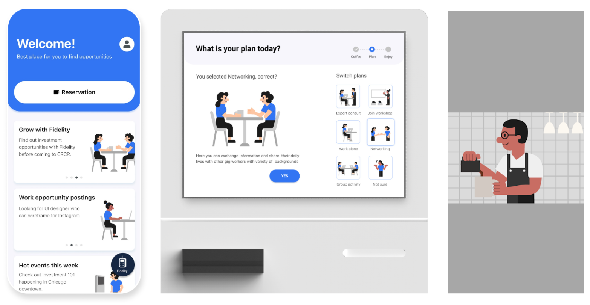
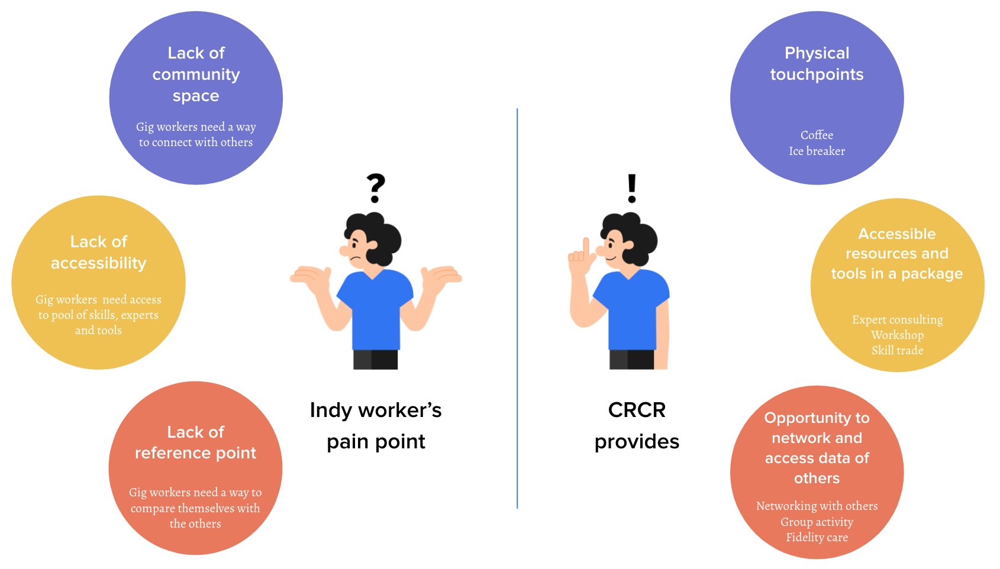

Fidelity Crewcrew Cafe
Project Type Team Project with Kyungtae Kim and Subin Kim
Research Methods literature review, Interview, Case study, Usability test
Tools Illustrator, figma, miro

Working in the gig economy is a decision made in the effort to have more freedom, yet it is often met with many complex and time-consuming tasks. We designed CrewCrew cafe for as hub for indy workers to get support.

Who is indy worker
An indy (or indie) worker is an independent worker. It is a broad term, and can cover the self-employed, freelancers, contractors, gig workers. They work for them, and are responsible for paying yourself. Compared with other employees, they usually handle many things on their own.
What we provide
First, We decided to provide lots of physical touchpoints, where self-employed workers can hang out and have coffee with the others, a place full of conversation and valuable information. Second, we planned a space filled with accessible resources and tools. Quick and easy access to the experts, workshops, and skill pools. Lastly, we set up opportunities for them to network and access data of others, allowing them to navigate their position by anchoring from reference points.
Our Vision

Fidelity’s Goal
Our Design Goal
Process
Fidelity Investments wants to create an experience model to build trust amongst the self-employed individuals, so-called indy workers. Our group decided to build a community space to reinforce the sense of belonging and provide support for the job of jobs. in the indy community by using the assets that Fidelity already can do the best.
Throughout the class, we started from defining What “is” the current problem by conducting user tests and secondary researches, then distilled the findings into the model of what “is” by making a journey map, then we suggested the model of what “could be” from the insights by making user flows and use cases, then we ran usability test, manifested our use cases by as What “could be” the potential solution for the future.


Use cases
At the end of the workshop, we narrowed down several concepts into three use cases. 1. Reserving for a visit, 2. Entering the cafe and 3. Activities inside the cafe.

1.
Reserving for a visit
The reservation system provides gig workers a sense of belonging. Gig worker’s one of the biggest issue is that they are normally working alone and it’s hard to get feedbacks. CRCR cafe will act as sort of a one-day company for them.
1.1 Before Reservation

App checks gig workers’ mental health for every visit
in order to provide expert consulting inside the cafe
1.2 Reservation

The user opens the app to register for a visit. He can
see the overall layout of the place to understand what he
wants to do. Then, they can fill out the schedule, personal
information and check out the estimated members for that
day.
2.
Entering the cafe, and talk to other indies
2.1 Self-service with kiosk

Bob decides to have a chat with other indy workers that are in a similar situation. He steps into the cafe and jumps on the kiosk. He orders coffee and then chooses the plan. The kiosk remembers the plan he chose at the registration phase. He then takes the ice breaker that could initiate a conversation.

2.2 Choosing seat with mobile

Bob checks out the availability of the tables to locate
which table he wants to join. After deciding where to sit, the
colored light pops up on the table he registered.
3.
Getting professional help for Job of Jobs
Fidelity Care is another key function on the mobile, it is where users can get Fidelity’s help with finance, career and mental health all in one place. User can monitor the overall status, and directly schedule an appointment with Fidelity specialist for help.
3.1 Introducing Fidelity Care

The user clicks the Fidelity care tab. In this tab,
Fidelity takes care of the user in three big categories to
provide help for his finance, career and wellness.
3.2 Finding an expert

The user can view the holistic scores of his overall
management. If he wants to better manage some graphs, he can
choose to talk with recommended experts or even the other gig
workers inside the cafe.
3.3 After expert consulting

After the expert consulting, specific plan tab gets
created based on the consulting results. If the user follows
the checklists, his cup gets refilled by the barista.
4.
More to explore: Skill trade

Bob uses the mobile APP to explore the community. There are
more function unlocked upon his arriving. One of that is skill
trade, where he can either trade his skill in different ways,
or find some skillful person.
Reflections
During this project, we were able to approach the problem with the perspective of the industry, connected with actual researchers and designers in the field, while we also tried to propose an outside view that challenges industry orthodoxies. We started from crazy ideas and validated them by many rounds of testing and iterations. There is no end of design, but I am proud of what we achieved here. Here are the three main lessons I learned from this project: